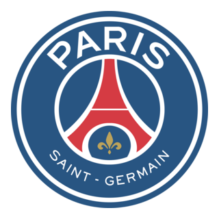
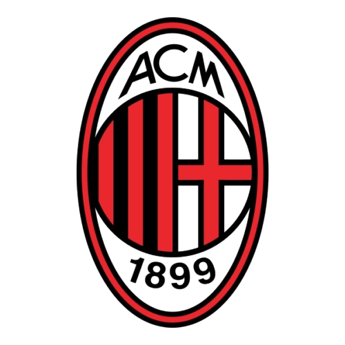
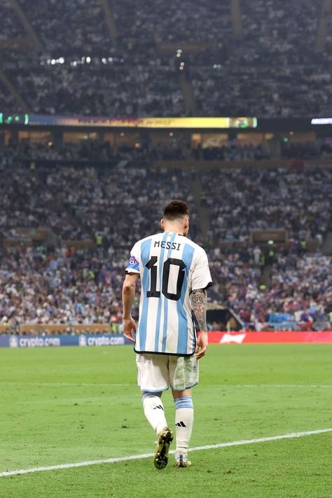
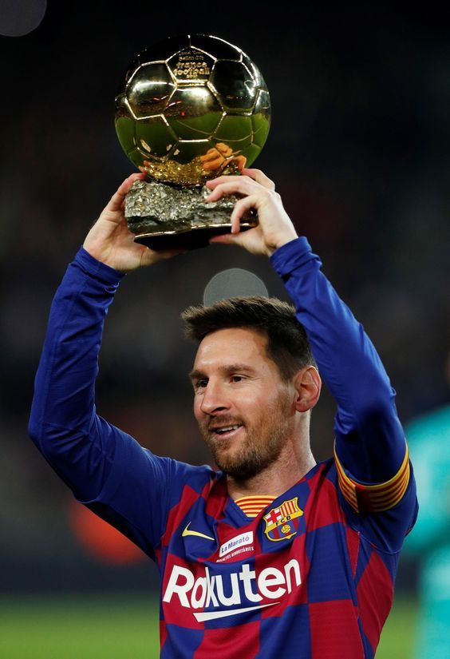

Lionel Messi, born on June 24, 1987, in Rosario, Argentina, is widely regarded as one of the greatest footballers of all time,
known for his extraordinary dribbling, vision, playmaking, and goal-scoring ability, having spent over two decades dazzling
the world with his performances at FC Barcelona where he won numerous titles including 10 La Liga championships and
4 UEFA Champions League trophies—before moving to Paris Saint-Germain in 2021 and later to Inter Miami in 2023, all
while achieving monumental success with the Argentina national team by winning the 2021 Copa América and the 2022
FIFA World Cup, solidifying his legacy with a record Eight Ballon d'Or awards and a reputation not only as a football genius
but also as a humble, dedicated, and inspirational figure in the world of sports.

Lionel Messi in 2019 was a breathtaking force of nature at the peak of his powers, blending unrivaled dribbling finesse, visionary playmaking, and lethal finishing into a season that saw him score 51 goals and provide 19 assists across all competitions, secure his sixth Ballon d'Or, drag a flawed Barcelona side to a La Liga title almost single-handedly, deliver unforgettable performances like his stunning free-kick against Liverpool in the Champions League semifinal, and continually redefine what it means to be the complete footballer—all while making the extraordinary look routine with every touch of the ball.

COUNTRIES
| JAN | FEB | MAR | APR | MAY | JUN | JUL | AUG | SEP | OCT | |||
|---|---|---|---|---|---|---|---|---|---|---|---|---|
| NO | 1 | 2 | 3 | 4 | 5 | 6 | 7 | 8 | 9 | 10 | ||
| NO | 1 | 2 | 3 | 4 | 5 | 6 | 7 | 8 | 9 | 10 | ||
| Rice | Beans |
|---|---|
| 20 | 40 |
| S/N | NAME | LOGO | ABOUT |
|---|---|---|---|
| 1 | BARCELONA | |
BEST TEAM IN THE WORLD |
| 2 | PARIS SAINT GERMAN |  |
UCL CHAMPION CURRENTLTY |
| 3 | AC MILAN |  |
THE WALL OF ITALY |
| 4 | LIVERPOOL | |
PREMIER LEAGUE CHAMPION |
| 5 | BAYERN MUNICH | LOGO | GERMANY'S POWER HOUSE |
| 6 | CHELSEA | LOGO | CLUB WORLD CUP CHAMPION |
| 7 | REAL MADRID | |
LOS BLANCOS |
Lionel Messi, born in Rosario, Argentina in 1987, is a football icon whose dazzling dribbles, pinpoint passes, and record-breaking goals have earned him eight Ballon d’Ors, a World Cup title, and legendary status at clubs like Barcelona, PSG, and now Inter Miami, while his humble personality and devotion to family and philanthropy make him beloved far beyond the pitch.
Cristiano Ronaldo, born in Madeira, Portugal in 1985, is a global football phenomenon known for his explosive speed, aerial dominance, and relentless goal-scoring, having won five Ballon d’Ors, multiple Champions League titles with Manchester United and Real Madrid, a European Championship with Portugal, and continuing to shine with Al-Nassr in Saudi Arabia, all while building a massive brand empire and inspiring millions with his discipline, charisma, and unmatched longevity.
Neymar da Silva Santos Júnior, born in Mogi das Cruzes, Brazil in 1992, is a dazzling footballer famed for his flair, creativity, and samba-style dribbling, rising to stardom with Santos FC, conquering Europe with Barcelona—where he formed the iconic MSN trio with Messi and Suárez—and later becoming the world’s most expensive player at PSG before joining Al-Hilal in Saudi Arabia, all while captivating fans with his showmanship, fashion sense, and deep love for Brazilian culture.